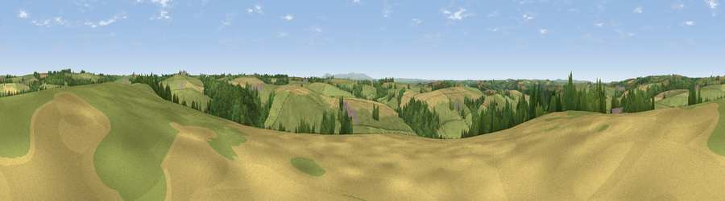

Viewpoint near Roborough
#25190 in England · top 49% of its area beats it · near RoboroughThe view, rendered

A 360° render of this exact spot computed from the terrain model, tree cover and land cover — summer colours, afternoon light, calibrated against photographs of famous viewpoints. Real trees, hedges and buildings will differ in detail.
The panorama
Grey silhouette: terrain skyline in each direction (720 bearings, Earth curvature and refraction included). Dashed green: skyline with trees (+15 m) and buildings (+8 m) as obstacles. Blue strip: how far the ground is visible on each bearing.
Where the view opens
Wedge length = distance to the farthest visible ground on that bearing (vegetation-aware). Rings at 10, 25 and 50 km.
What fills the view
63% grassland · 18% woodland · 17% cropland · 1% built-up
Angular shares of the visible panorama (visual magnitude), not map area. Landscape diversity 0.42 (0–1 Shannon).
Key numbers
More beautiful places nearby
The staircase of upgrades: each row has a higher view potential than everything closer. Driving times are estimates from straight-line distance, calibrated against real road routing — check an actual route before setting out.
| Place | Direction | Drive | Score |
|---|---|---|---|
| Viewpoint near Roborough | E · 2 km | ~4 min | 50.5 |
| Viewpoint near Beaford | SW · 2 km | ~5 min | 52.3 |
| Viewpoint near Kingscott | WNW · 3 km | ~7 min | 53.5 |
| Viewpoint near Little Torrington | WSW · 5 km | ~11 min | 59.1 |
| Viewpoint near High Bullen | NW · 5 km | ~12 min | 71.2 |
| Viewpoint near Alverdiscott | NW · 10 km | ~20 min | 71.7 |
| Viewpoint near Bideford | NW · 11 km | ~21 min | 73.5 |
| Viewpoint near Bishop's Tawton | N · 13 km | ~23 min | 73.8 |
50.93590, -4.05609 · source: screening · position refined by local search. Computed location — check access rights before visiting.